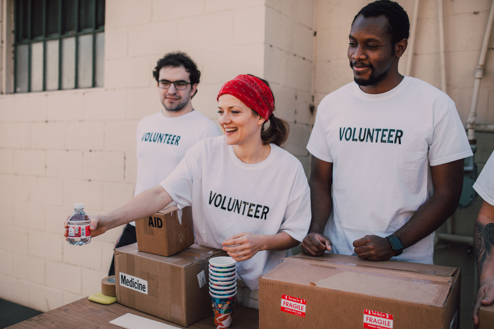

Workshops
Supportive work environments provide adults with intellectual disabilities with meaningful activities, training and opportunities.
Learn MoreCreating opportunities. Changing lives.

Oasis Association creates opportunities, supports inclusion, and helps people build meaningful and independent lives.
Learn MoreOasis Association is a non-profit organisation dedicated to creating meaningful opportunities, support and services for people with intellectual disabilities.
Supporting people, creating opportunities and strengthening our community.

Building an inclusive community where everyone has an opportunity to participate.
Learn More
Our projects create practical opportunities while making a positive difference.
Explore Projects
Oasis Association is committed to creating opportunities, supporting inclusion and improving the lives of people in our community.
Through our programmes, projects and community activities, we work together to build a more inclusive and supportive future.
About UsOasis Association is a non-profit organisation that creates opportunities for people with intellectual disabilities. The organisation provides support through developmental, residential, work and community-based programmes.
Oasis aims to help beneficiaries develop their abilities, participate in meaningful activities and become as independent and productive as possible.
Learn More About UsOasis provides a range of programmes and services designed to support beneficiaries and create meaningful opportunities.
Supportive work environments provide adults with intellectual disabilities with meaningful activities, training and opportunities.
Learn More
Specialised programmes provide care, development, stimulation and support for children with intellectual disabilities.
Learn More
Oasis recycling projects create opportunities while helping communities participate in responsible environmental practices.
Learn More
Projects such as shops, bakeries and recycling help support the sustainability of Oasis programmes.
View Our ProjectsOasis creates opportunities for people with intellectual disabilities and their families through a range of services and programmes.
People supported
Communities reached
Core service areas
Years of history
There are many ways you can support Oasis Association. You can donate, volunteer, recycle, donate quality second-hand goods or explore opportunities for business partnerships.
Find Out How You Can Help